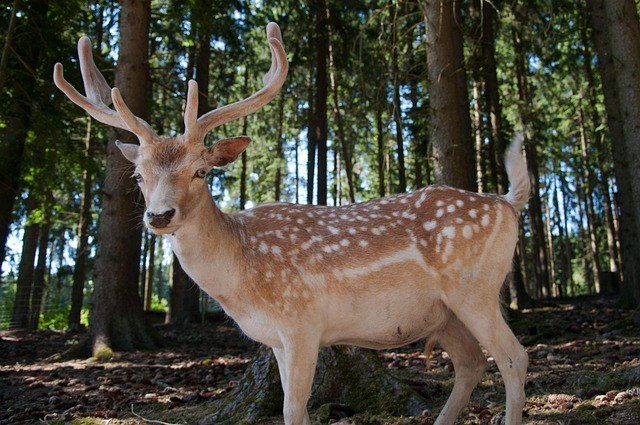
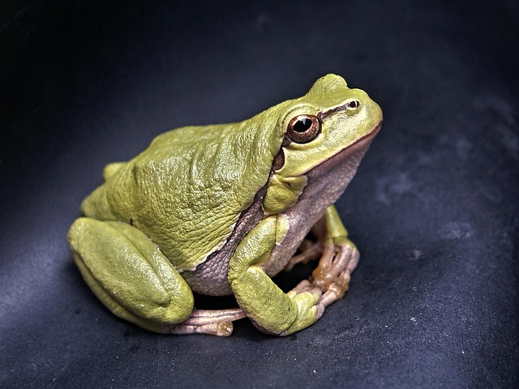
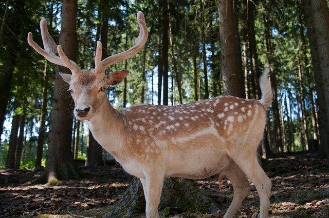
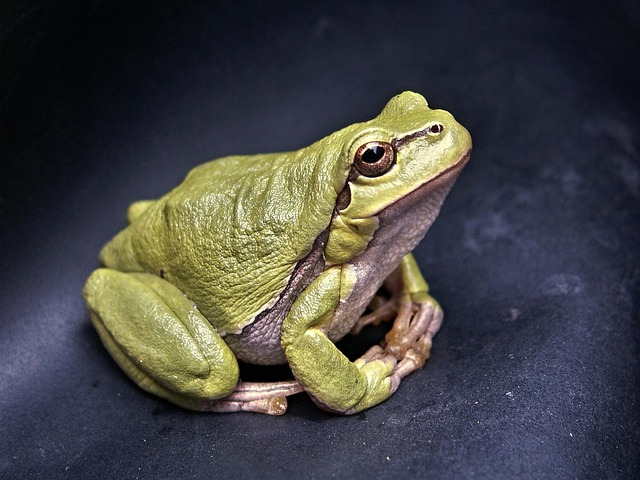

Puebla, ubicado en el centro de México, se caracteriza por su riqueza natural y diversidad ecológica, resultado de sus variados climas y relieves que van desde zonas áridas hasta bosques templados. Esta variedad de ecosistemas convierte al estado en un territorio clave para la conservación ambiental y el estudio de la biodiversidad.
En cuanto a flora y fauna, Puebla alberga especies vegetales como el mezquite, el garambullo y la quiotilla, muchas con usos medicinales y alimenticios. En la fauna destacan el puma, el cacomixtle y la guacamaya verde, especies que cumplen funciones ecológicas importantes. Sin embargo, tanto plantas como animales enfrentan amenazas por la actividad humana, lo que subraya la necesidad de proteger estos valiosos recursos naturales.
 





Lagartija de collar
Sceloporus torquatus
Descripción
Vive en la zona central de México, incluyendo a Puebla, distribuyéndose en zonas altas de la región. Se encuentra en zonas abiertas semidesérticas, rocosas, pastizales, bosques de coníferas y bosques mixtos.
Categoría
De menor preocupación

Rana Poblana
Lithobates pueblae
Descripción
Endémico de Puebla y solo está presente en las adyacencias del río Nexaca. La expansión urbana y sus actividades lamentablemente ha llevado a que esta especie de Puebla esté clasificada en peligro crítico de extinción
Categoría
En peligro crítico de extinción

Lagarto caimán mexicano
Abronia graminea
Descripción
Endémico de México, se distribuye en zonas altas de Veracruz y las adyacencias de Puebla. Habita en bosques de pino-encino en las bromelias del dosel.
Categoría
En peligro de extinción

Cenzontle
Mimus polyglottos
Descripción
Se le encuentra desde el sur de Canadá hasta México, Cuba, Haití, República Dominicana y Puerto Rico. En México se le puede encontrar casi en todo su territorio.
Categoría
Preocupación menor
Guacamaya verde
Ara militaris
Descripción
La Reserva de la Biósfera Tehuacán-Cuicatlán es una de las pocas localidades en México donde todavía existen de modo silvestre, pues están en peligro de extinción a causa del comercio ilegal de mascotas y reducción de hábitat.
Categoría
En peligro de extinción

Armadillo de nueve bandas
Dasypus novemcinctus
Descripción
Tiene una amplia distribución, desde el sur de Estados Unidos, pasando por México y llegando hasta el extremo sur del continente. De este modo una de las regiones que ocupa es el estado de Puebla, habitando diversos ecosistemas.
Categoría
Menor preocupación

Cacomixtle
Bassariscus astutus
Descripción
Puede encontrarse en varios lugares poblanos como Amozoc, San Baltazar Tetela, Valsequillo, Huehuetlán y Zapotitlán Salinas.
Categoría
Menor preocupación

Tlacuache
Didelphimorphia
Descripción
Se distribuye desde el este de México, en Norteamérica, hasta el norte de Brasil, Bolivia y Perú en Sudamérica. Se encuentran en bosques tropicales y subtropicales, tanto primarios como secundarios, a altitudes de hasta 2200 sobre el nivel del mar.
Categoría
Amenazado

Tuza de bolsillo de Merriam
Cratogeomys merriami
Descripción
Se desarrollan en Estados Unidos y México. Particularmente esta es una especie endémica mexicana, habitando varias zonas del país, incluyendo el oeste de Puebla. Vive en pastizales, bosques de pino-encino y tierras agrícolas.
Categoría
Menor preocupación

Murciélago mexicano de lengua larga
Choeronycteris mexicana
Descripción
Se distribuye en Estados Unidos, México, El Salvador, Guatemala y Honduras. En México tiene amplia distribución y el estado de Puebla es una de las áreas donde tiene presencia. Vive en diversos hábitats, como cañones profundos de cadena montañosas, matorrales desérticos y varios tipos de bosques.
Categoría
Casi amenazado

Ratón venado de Puebla
Peromyscus mekisturus
Descripción
Hay poca información de la misma especie y se estima que es específica de ambientes rocosos y áridos. Estos animales en Puebla se clasifican En peligro crítico de extinción, aunque la Unión Internacional para la Conservación de la Naturaleza reporta que realmente lo más probable es que esté extinta.
Categoría
Probablemente extinta